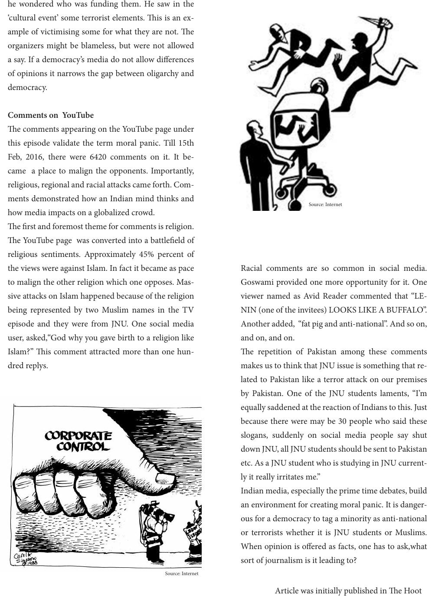

he wondered who was funding them. He saw in the
‘cultural event’ some terrorist elements. is is an ex-
ample of victimising some for what they are not. e
organizers might be blameless, but were not allowed
a say. If a democracy’s media do not allow dierences
of opinions it narrows the gap between oligarchy and
democracy.
Comments on YouTube
e comments appearing on the YouTube page under
this episode validate the term moral panic. Till 15th
Feb, 2016, there were 6420 comments on it. It be-
came a place to malign the opponents. Importantly,
religious, regional and racial attacks came forth. Com-
ments demonstrated how an Indian mind thinks and
how media impacts on a globalized crowd.
e rst and foremost theme for comments is religion.
e YouTube page was converted into a battleeld of
religious sentiments. Approximately 45% percent of
the views were against Islam. In fact it became as pace
to malign the other religion which one opposes. Mas-
sive attacks on Islam happened because of the religion
being represented by two Muslim names in the TV
episode and they were from JNU. One social media
user, asked,“God why you gave birth to a religion like
Islam?” is comment attracted more than one hun-
dred replys.
Racial comments are so common in social media.
Goswami provided one more opportunity for it. One
viewer named as Avid Reader commented that “LE-
NIN (one of the invitees) LOOKS LIKE A BUFFALO”.
Another added, “fat pig and anti-national”. And so on,
and on, and on.
e repetition of Pakistan among these comments
makes us to think that JNU issue is something that re-
lated to Pakistan like a terror attack on our premises
by Pakistan. One of the JNU students laments, “I’m
equally saddened at the reaction of Indians to this. Just
because there were may be 30 people who said these
slogans, suddenly on social media people say shut
down JNU, all JNU students should be sent to Pakistan
etc. As a JNU student who is studying in JNU current-
ly it really irritates me.”
Indian media, especially the prime time debates, build
an environment for creating moral panic. It is danger-
ous for a democracy to tag a minority as anti-national
or terrorists whether it is JNU students or Muslims.
When opinion is oered as facts, one has to ask,what
sort of journalism is it leading to?
Source: Internet
Source: Internet
Article was initially published in e Hoot